在 Linux 中，卷或硬盘遵循设备文件的命名约定。例如，/dev/sda表示系统上的第一个 SCSI 或 SATA 硬盘，/dev/sdb表示第二个 SCSI 硬盘（有时是移动硬盘），以此类推。
使用 lsblk 命令 – 在 Linux 中查看文件系统类型
lsblk 是一个命令行实用工具，用于输出 Linux 系统中指定的卷的信息。它通过引用 udev 数据库和 sysfs 文件系统来收集有关硬盘的信息。
它从块设备中读取标签（LABEL）、UUID 和文件系统类型，并将它们输出到「终端」。
lsblk
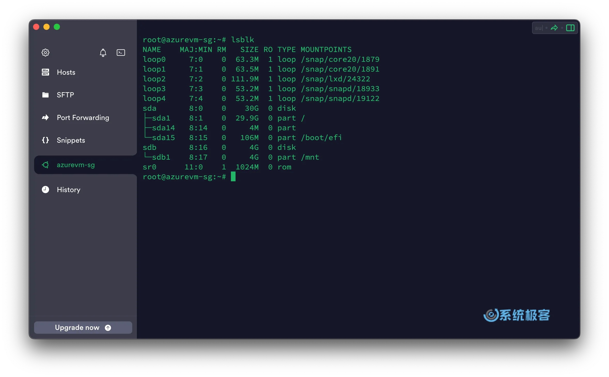
若要获取已挂载块卷的其他信息，请使用-f参数。这将会输出更详细的信息，如文件系统类型、LABEL 和 UUID。
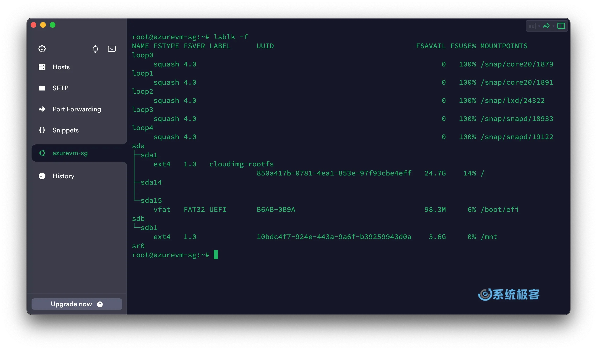
使用 fdisk 命令 – 在 Linux 中查看文件系统信息
fdisk 是 Linux 系统中用于创建和操作磁盘分区的命令行实用工具。使用-l参数可以列出有关磁盘驱动器的详细信息，例如：磁盘类型和大小、磁盘型号、扇区大小和其他附加信息。
sudo fdisk -l
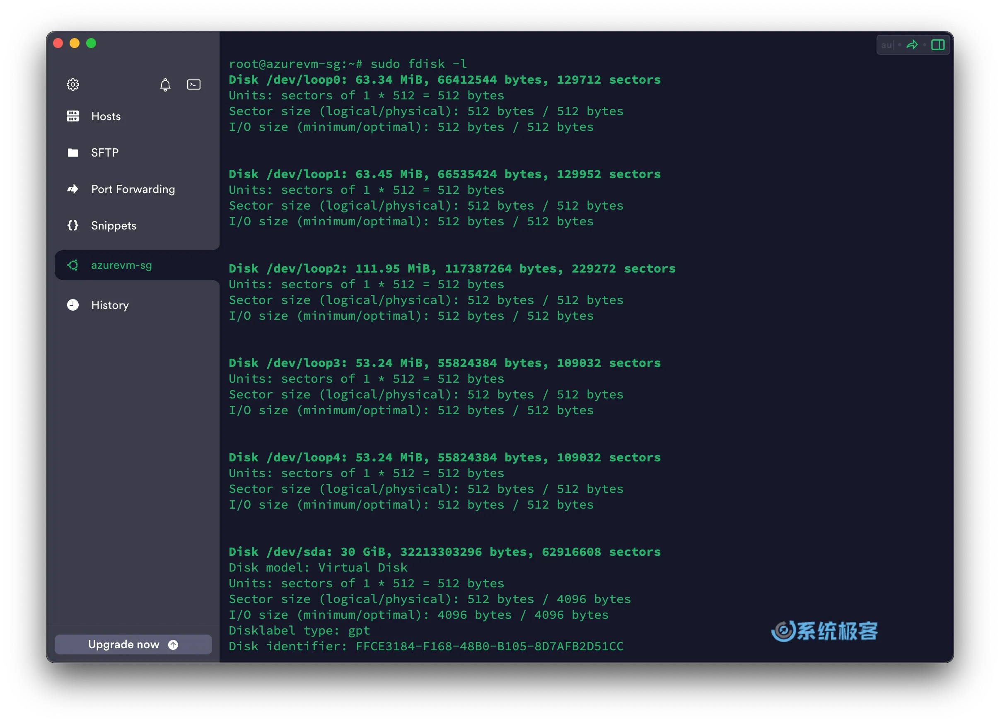
使用 hwinfo 命令 – 查看 Linux 硬盘硬件信息
我们可以使用 hwinfo 实用程序在 Linux 系统中查看硬盘硬件信息。使用--disk参数即可输出与当前系统连接的卷或磁盘驱动器的硬件信息。
hwinfo --disk
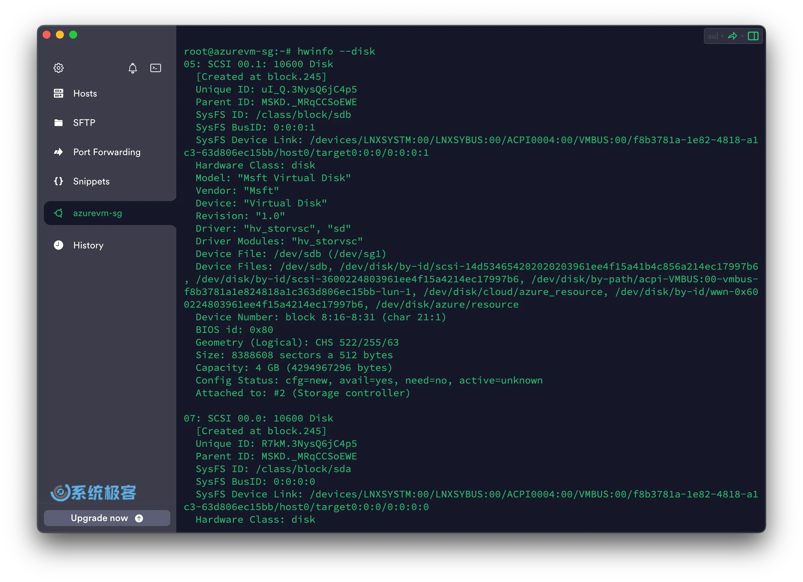
使用 lshw 命令 – 查看 Linux 硬盘类型
lshw 是一个命令行实用工具，用于提取计算机硬件配置的详细信息。它可以输出主板配置、固件版本、内存配置、CPU 相关详细信息。使用-class disk参数即可输出硬盘的详细信息，包括描述、产品、供应商、总线信息、版本、大小等。
sudo lshw -class disk
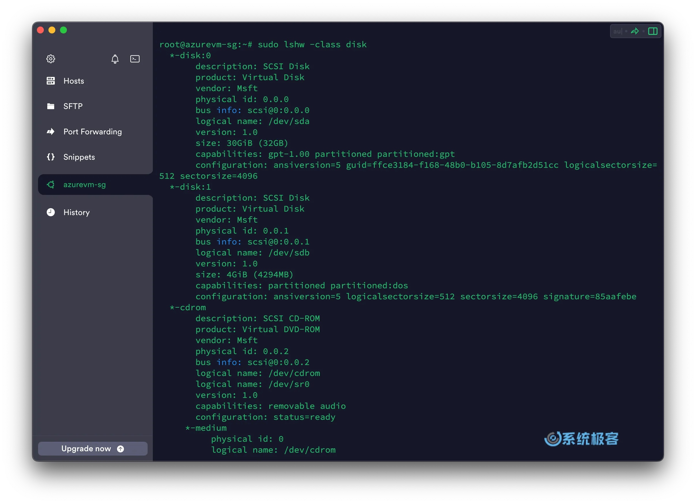
使用df命令
df命令是Linux系统中用于查看文件系统磁盘空间使用情况的常用命令。使用该命令可以查看磁盘空间的总容量、已使用空间、可用空间以及文件系统的挂载点等信息。下面是使用df命令查看磁盘空间的示例：
df
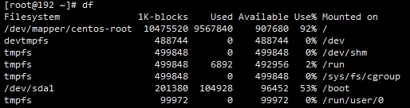
使用df -h命令来查看磁盘信息， -h 选项为根据大小适当显示：
df -h
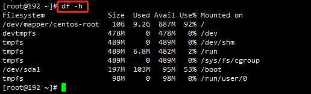
在上述命令中，-h选项用于以人类可读的方式显示磁盘空间大小，更易于理解。使用该命令可以查看系统中所有文件系统的磁盘空间使用情况。
| 内容参数 | 含义 |
|---|---|
| Filesystem | 文件系统 |
| Size | 分区大小 |
| 1k-blocks | 单位是1KB(使用df查看) |
| Used | 已用容量 |
| Avail | 还可用的容量 |
| Use% | 已用百分比 |
| Mounted on | 挂载点 |
使用du命令
du(disk usage)，含义为显示磁盘空间的使用情况，用于查看当前目录的大小。该命令可以递归地统计目录下所有文件和子目录的空间占用情况，并按照大小进行排序。下面是使用du命令查看当前目录下各子目录的空间占用情况的示例
#查看当前目录大小
du -sh
#返回该目录/文件的大小
du -sh [目录/文件]
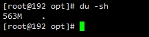
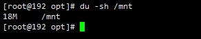
#查看当前文件夹下的所有文件大小（包含子文件夹）
du -h
#查看指定文件夹下的所有文件大小（包含子文件夹）
du -h [目录/文件]
#返回当前文件夹的总M数
du -sm
#返回指定文件夹/文件总M数
du -sm [文件夹/文件]
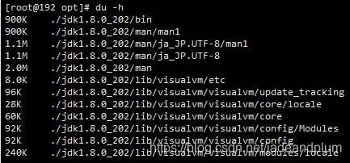
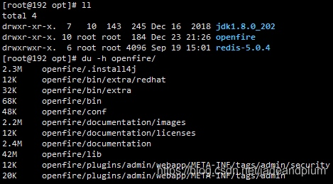
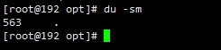
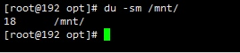
| 参数 | 含义 |
|---|---|
| -s | 对每个Names参数只给出占用的数据块总数 |
| -a | 递归地显示指定目录中各文件及子目录中各文件占用的数据块数 |
| -b | 以字节为单位列出磁盘空间使用情况（系统默认以k字节为单位） |
| -k | 以1024字节为单位列出磁盘空间使用情况 |
| -c | 最后再加上一个总计（系统默认设置） |
| -l | 计算所有的文件大小，对硬链接文件，则计算多次 |
| -x | 跳过在不同文件系统上的目录不予统计 |
| -h | 以K，M，G为单位，提高信息的可读性 |
使用磁盘工具 – 从图形界面查看硬盘信息
最后，可以使用适用于 GNOME 桌面环境Gnome Disks和KDE Partition Manager应用程序查看硬盘信息。该应用程序提供以下图形界面仪表板，以显示所有已挂载的磁盘卷和光驱。
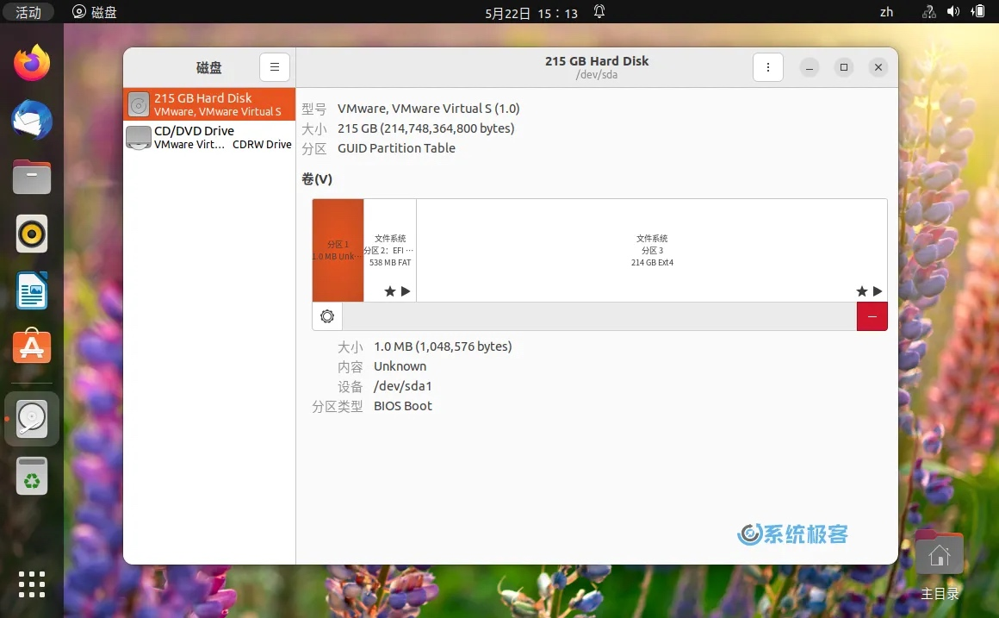